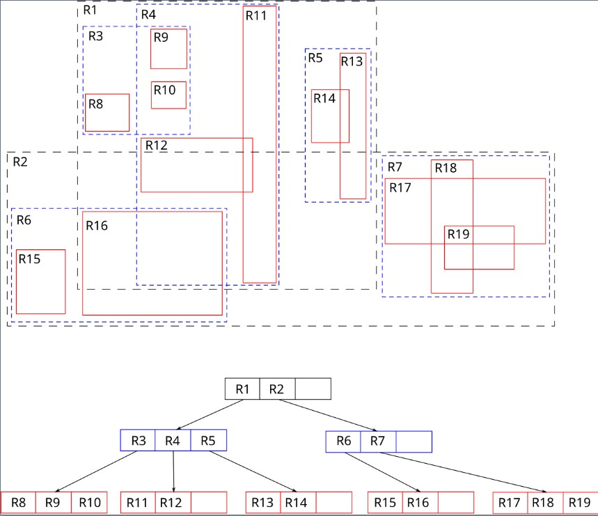

Spatial data structures are specialized ways of organizing information based on where things are located in space. They are essential for answering questions that involve position, distance, or area—things that traditional databases aren't built to handle efficiently. Instead of just looking for items based on values (like “find all red cars”), spatial structures let us ask more complex, location-based questions such as:
"What is the closest hospital to my location?"
"Which buildings fall within this neighborhood?"
"Show all coffee shops within 1 km of here."
To answer these kinds of queries efficiently, spatial structures group and index data based on coordinates, regions, or proximity. Each method—like grids, quadtrees, or KD-Trees—has its own strengths and weaknesses. Some are faster at searching, others use less memory, and some are easier to update dynamically.
These structures are widely used in real-world systems like GPS navigation, video games, robotics, mapping tools, and spatial databases. Below are six foundational spatial structures that help power those applications.
KD-Tree
Binary space partitioning for multidimensional data. Enables efficient range queries through hierarchical decomposition.
 Details →
Details →
QuadTree
Recursively divides 2D space into four quadrants. Ideal for spatial indexing in geographic systems.
 Details →
Details →
R-Tree
Disk-based indexing using Minimum Bounding Rectangles (MBRs). Optimized for spatial queries on large datasets.

Details →
Grid File
Partitions space into uniform cells with pointers to data buckets. Provides O(1) access for uniform distributions.
 Details →
Details →
Space Filling Curves
Hilbert/Z-order curves that map multidimensional data to 1D while preserving spatial locality.
 Details →
Details →
Voronoi Diagrams
Geometric partitioning of space into regions based on distance to generator points. Essential for proximity analysis.
 Details →
Details →